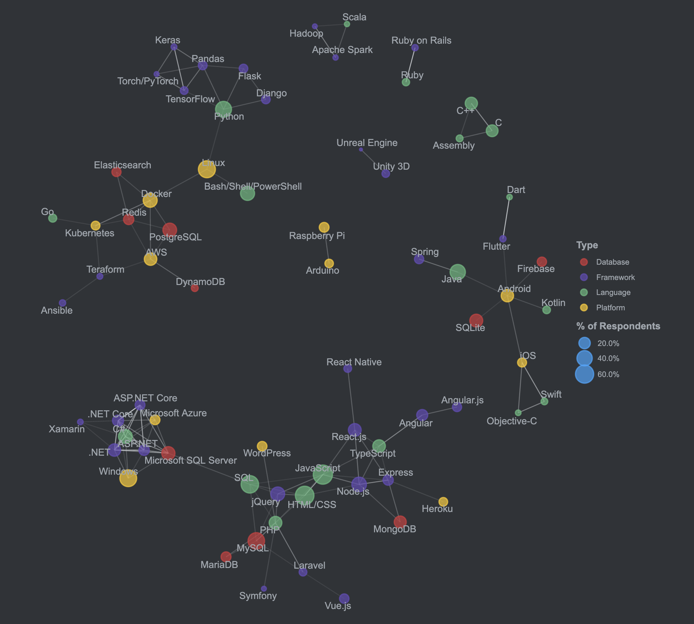

StackOverflow - 2020 Developer Survey
StackOverflow published its Developer Survey 2020. Click here for details.
In 2020, Python, Go, TypeScript, Rust are the programming language most loved by developers in the world. It means that these languages are in vogue and new learners are on the rise. While JavaScript swallows everything, Perl, PHP, and Ruby seem to be still in high demand.
Frameworks packaging frontends, backends and database into one, such as Rails, are already not preferred. Today, dividing frontends with JavaScript (Node.js, Vue.js, React.js) and backends/database with scalable cloud services (AWS, GCP) is major approach for adaptive web applications.
Python and Java have always been very popular and in demand as general languages that can be used for many purposes. In the future, it will be interesting to see if Go and Rust can take their place.
Finally, I would like to introduce the cluster map of major development technologies found by the StackOverflow Developer Survey 2020. With the penetration of new technologies such as mobile, container and cloud computing, it will be more difficult to become a full-stack engineer in the near future.
- Assembly, C, C++
- Raspberry Pi, Arduino
- Unity, UnrealEngine
- Hadoop, Scala, Apache Spark
- Python, Pandas, Torch/PyTorch
- Linux, Docker, Kubernetes, Bash/Shell
- AWS, Redis, Ansible, DynamoDB, PostgreSQL
- JavaScript, Node.js, React.js, Angular, TypeScript, MongoDB,
- PHP, MySQL, jQuery, WordPress
- Java, Swift, Android, iOS, Kotlin, SQLite, Firebase
- C#, .NET, Windows, Azure
